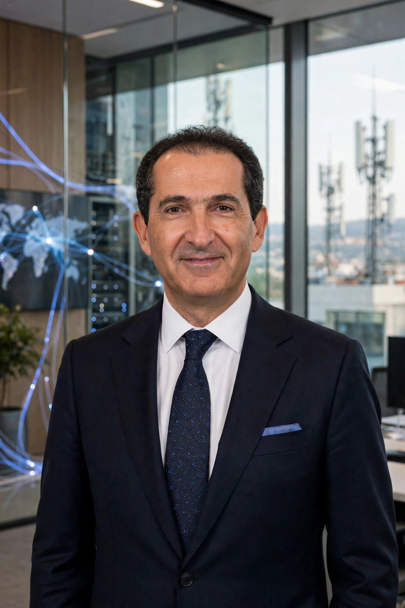

Patrick Drahi (born 20 August 1963) is a French-Israeli businessman and magnate in telecommunications and media. He is the founder and controlling shareholder of Altice.

Born in Casablanca to a Jewish family, Drahi moved to France at 15, studied at École Polytechnique and Télécom Paris, and began his career in satellite research before entering cable television.
From the early 2000s Drahi acquired cable operators across Europe, building Luxembourg-based Altice. Major deals included France's SFR (2014), Portugal Telecom, US cable operators Suddenlink and Cablevision (forming Altice USA), and the Israeli operator Hot. His leveraged acquisition strategy relied heavily on debt and cost-cutting.
In 2019 Drahi acquired auction house Sotheby's for about $3.7 billion through BidFair USA. He also built stakes in BT Group in the UK. Altice's high debt load led to restructuring talks and asset sales in the 2020s.